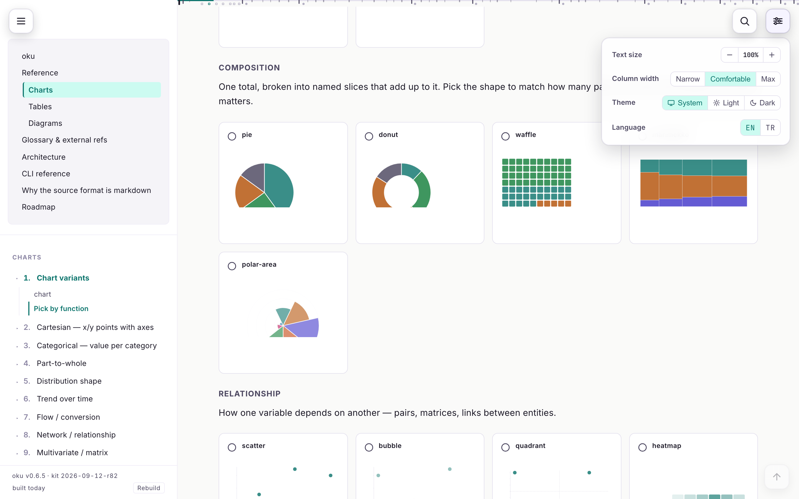
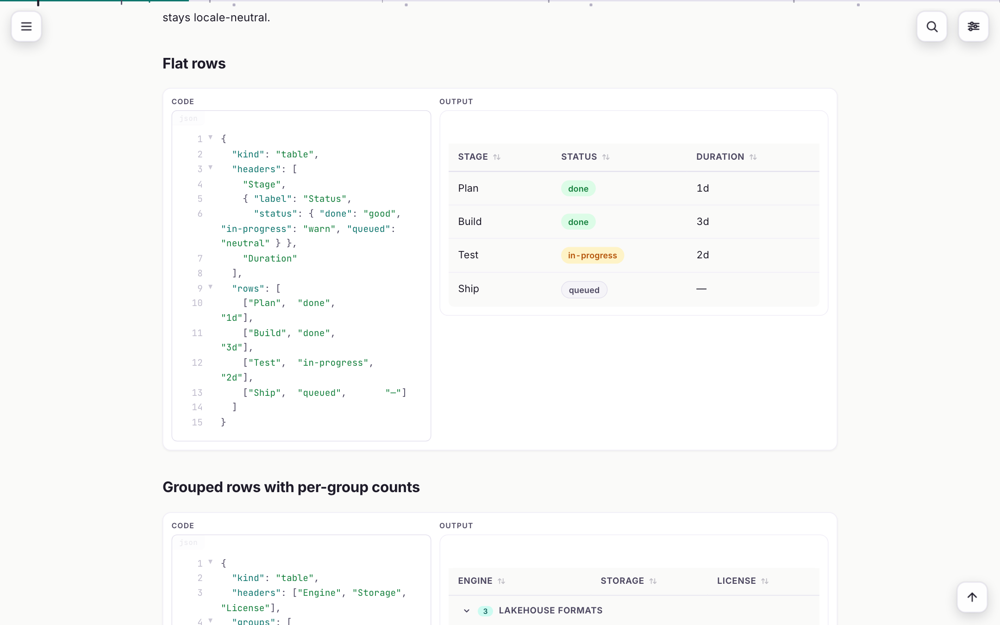
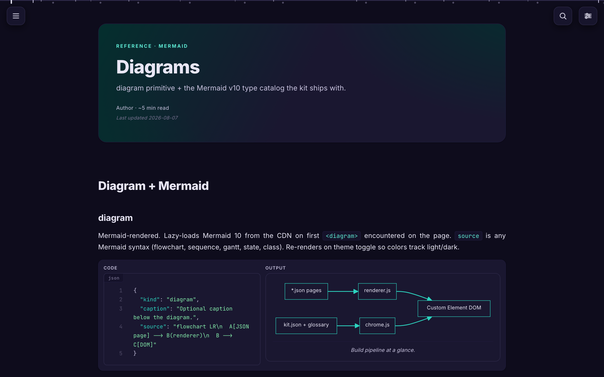
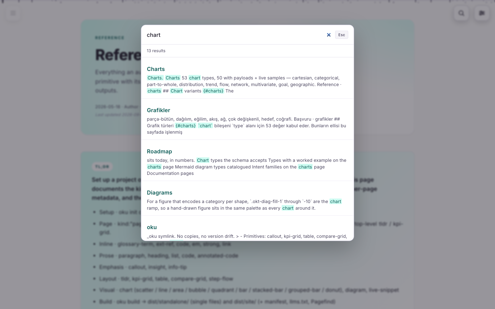
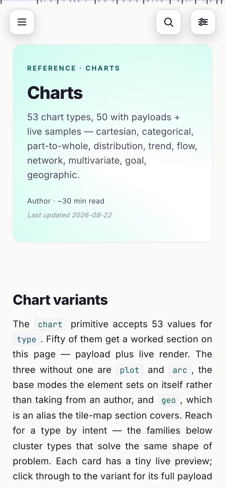

Python CLI · Custom Elements · one HTML file per page · MIT
Markdown in. One visual HTML file out.
Charts, tables, diagrams and step flows are typed fences in an ordinary Markdown file. The browser renders them with Custom Elements; one command builds a multi-page site with search — and a single-file copy of every page that opens from file://, follows the OS theme and loads nothing from a CDN.

Documentation tooling usually makes you choose: a static-site generator that needs a build and a server before anyone can read a chart, or a document that travels as a file and cannot show one. oku keeps the source an ordinary Markdown file — GitHub, Obsidian and VS Code still render the prose, the tables and the Mermaid, and an oku-* fence shows there as readable JSON — and makes the rendered page self-contained, so the reader gets one file that opens from a mail attachment and looks the same next year.
Typed fences, one JSON object each
chart, table, diagram, step-flow, compare-grid, kpi-grid, timeline, annotated-code, live-snippet, example, insight, info-tip, copy, chart-grid. Every payload shape is printed by oku spec, read from the code.
53 chart types, grouped by intent
Cartesian, categorical, part-to-whole, distribution, trend, flow, network, multivariate, goal, geographic. One primitive, a shared tooltip with click-to-pin, labels fitted after the font lands, colours from tokens so light and dark both hold.
The reader gets one file
dist/standalone/ holds a self-contained HTML per page: theme, fonts, Mermaid and Prism are inside, nothing loads from a CDN. It opens from file://, from a mail attachment, from a USB stick.
A site, with search and a reading rail
dist/site/ is the multi-page build: one drawer for the site tree and the on-page TOC, full-text search (Pagefind), a landmark minimap, one menu for text size, column width, theme and language — and an llms.txt for the readers that are models.
Checks that catch what a reviewer would
oku check runs schema, structure and presentation rules — every block in a section ends at the same right edge, nothing waits for a click, colour comes from tokens — and the build refuses a page that fails them. Each rule is a browser test.
Translations side by side
page.md and page.tr.md live next to each other; the manifest pairs them and the language switch appears only where there is somewhere to go. Tables sort, filter and copy as TSV or Markdown in every locale.
From a fence to a page
A table is fifteen lines of JSON in a ```oku-table fence. The same file reads as plain Markdown on GitHub; built, it is the table on the right — sortable, filterable, with the author's own status words mapped to colour.

- Write the fence
Front-matter, a GFM body, and one compact JSON object per
oku-*fence.[term](#g/id)is a glossary tooltip,[label](#f/path)a file chip with a preview. - oku check
Schema, structure and presentation lint;
--strictfails on warnings,--fixapplies the mechanical rewrites. What passes here renders finished. - oku build
dist/standalone/— one self-contained HTML per page;dist/site/— the multi-page site with its search index andllms.txt.oku serveis the same with live reload. - Ship either
Attach the single file, or publish the site folder anywhere static — this documentation is
docs/of the repository, built by the kit itself on every push.
Install
Python 3.12 and uv. The repository is the package; ./ctl deploy puts oku on the PATH and verifies the installed kit build.
Install
git clone git@github.com:mmdemirbas/oku.git && cd oku
./ctl deploy # `oku` on PATHOr run it in place: uv run bin/oku serve from the repository root.
A docs tree
mkdir docs && cd docs
oku init # this directory becomes the docs root
oku serve # http://localhost:9876, live reload
oku build # dist/standalone/ + dist/site/Pages written as JSON before the Markdown format existed keep rendering; oku migrate converts them.
What it looks like
The kit documents itself with itself: every screen below is a page of the documentation, rendered by oku.



Command line
One executable, eight verbs. Without installing, uv run bin/oku from the repository does the same.
oku init # _oku symlink + index.html stub in the current directory
oku check # schema + structural + presentation lint
oku check --strict # exit 1 on warnings too; --fix applies the mechanical rewrites
oku build # dist/standalone/ + dist/site/ + search index
oku serve # local HTTP with live reload
oku spec [kind] # print a fence's payload shape, read from the code
oku migrate [path] # convert page-JSON (v1/v2) sources to .md
oku clean # remove dist/Rules the kit enforces
Every block in a section ends at the same right edge. The default renders finished; nothing waits for a click. Opening the drawer moves nothing on the page. A label is fitted to the space it has, measured after the font lands. Colour comes from tokens, so a hand-styled Mermaid node or SVG is a lint warning. Each rule is a browser test; the reasoning behind each is in PRESENTATION-RULES.md.